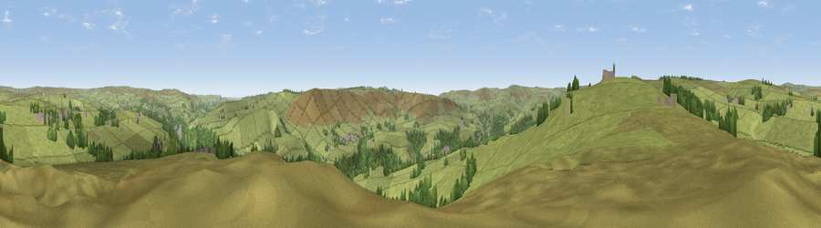

Viewpoint near Blackshaw Head
#24640 in England · top 49% of its area beats it · near Blackshaw HeadWhere it is
The exact computed spot (SD 95275 26475). Click the marker for map links.
The view, rendered

A 360° render of this exact spot computed from the terrain model, tree cover and land cover — summer colours, afternoon light, calibrated against photographs of famous viewpoints. Real trees, hedges and buildings will differ in detail.
The panorama
Grey silhouette: terrain skyline in each direction (720 bearings, Earth curvature and refraction included). Dashed green: skyline with trees (+15 m) and buildings (+8 m) as obstacles. Blue strip: how far the ground is visible on each bearing.
Where the view opens
Wedge length = distance to the farthest visible ground on that bearing (vegetation-aware). Rings at 10, 25 and 50 km.
What fills the view
88% grassland · 11% woodland · 1% built-up
Angular shares of the visible panorama (visual magnitude), not map area. Landscape diversity 0.19 (0–1 Shannon).
Key numbers
More beautiful places nearby
The staircase of upgrades: each row has a higher view potential than everything closer. Driving times are estimates from straight-line distance, calibrated against real road routing — check an actual route before setting out.
| Place | Direction | Drive | Score |
|---|---|---|---|
| Viewpoint near Lydgate | W · 2 km | ~6 min | 62.3 |
| Hoof Stones Height | NW · 5 km | ~10 min | 64.0 |
| Viewpoint near Shawforth | SW · 7 km | ~14 min | 66.1 |
| Thieveley Pike | W · 8 km | ~16 min | 66.2 |
| Viewpoint near Weir | W · 9 km | ~18 min | 66.8 |
| Lad Law (Boulsworth Hill) | NNW · 9 km | ~18 min | 71.5 |
| Viewpoint near Edenfield | WSW · 15 km | ~27 min | 77.5 |
| Darwen Hill | W · 28 km | ~44 min | 80.7 |
53.73464, -2.07310 · source: screening · position refined by local search. Computed location — check access rights before visiting.